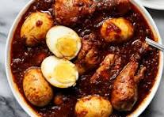

Home
Doro Wote

About Doro-WOt
Doro wot, meaning "chicken stew" in Amharic, is a popular and iconic Ethiopian dish often considered the national cuisine. It's a spicy chicken stew, traditionally made with chicken, caramelized onions, berbere (a blend of spices), hard-boiled eggs, and served with injera, a spongy flatbread made from teff.
Ingredient
- Chicken
- Eggs
- Berbere Spice
- Niter Kibbeh
- Onions
- garlic
- ginger
- Tej
Steps
- The onions, garlic and ginger are caramelized
- Adding the chicken pieces and the spices
- The chicken is simmered for a long time for about an hour
- Then add the Niter Kibbeh
- Eggs are added near the end of the cooking time